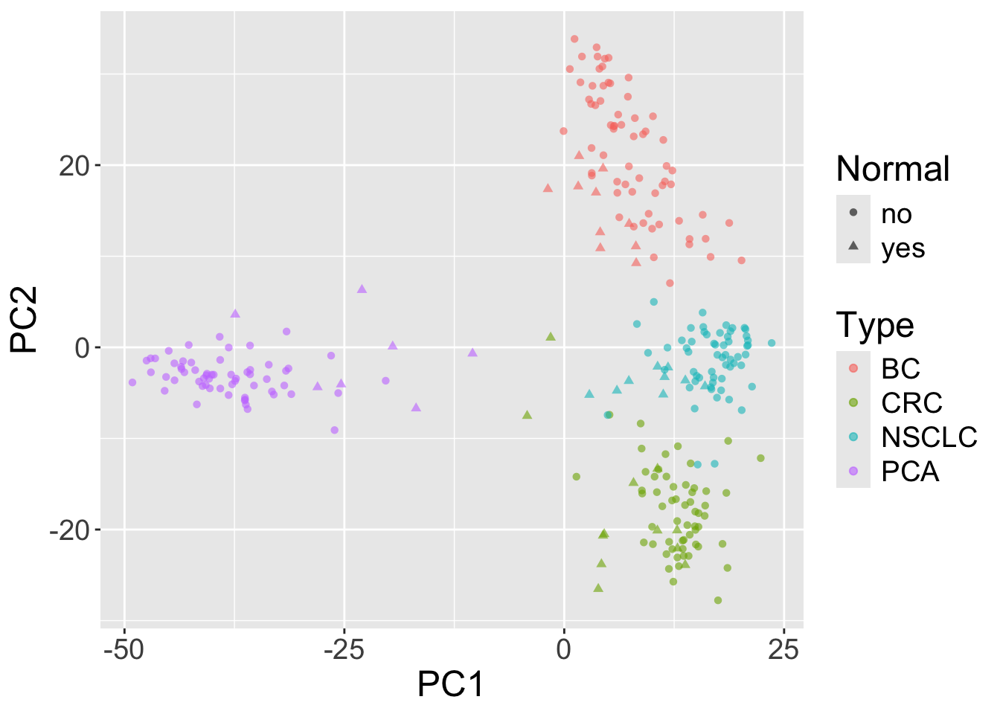

BiocManager::install("GEOquery")14 Accessing and working with public omics data
15 The data
The data we are going to access are from this paper.
Background: The tumor microenvironment is an important factor in cancer immunotherapy response. To further understand how a tumor affects the local immune system, we analyzed immune gene expression differences between matching normal and tumor tissue.Methods: We analyzed public and new gene expression data from solid cancers and isolated immune cell populations. We also determined the correlation between CD8, FoxP3 IHC, and our gene signatures.Results: We observed that regulatory T cells (Tregs) were one of the main drivers of immune gene expression differences between normal and tumor tissue. A tumor-specific CD8 signature was slightly lower in tumor tissue compared with normal of most (12 of 16) cancers, whereas a Treg signature was higher in tumor tissue of all cancers except liver. Clustering by Treg signature found two groups in colorectal cancer datasets. The high Treg cluster had more samples that were consensus molecular subtype 1/4, right-sided, and microsatellite-instable, compared with the low Treg cluster. Finally, we found that the correlation between signature and IHC was low in our small dataset, but samples in the high Treg cluster had significantly more CD8+ and FoxP3+ cells compared with the low Treg cluster.Conclusions: Treg gene expression is highly indicative of the overall tumor immune environment.Impact: In comparison with the consensus molecular subtype and microsatellite status, the Treg signature identifies more colorectal tumors with high immune activation that may benefit from cancer immunotherapy.
In this little exercise, we will:
- Access public omics data using the GEOquery package
- Get an opportunity to work with another SummarizedExperiment object.
- Perform a simple unsupervised analysis to visualize these public data.
15.1 GEOquery to multidimensional scaling
The first step is to install the R package GEOquery. This package allows us to access data from the Gene Expression Omnibus (GEO) database. GEO is a public repository of omics data.
GEOquery has only one commonly used function, getGEO() which takes a GEO accession number as an argument. The GEO accession number is a unique identifier for a dataset.
Use the GEOquery package to fetch data about GSE103512.
The first step, a detail, is to convert from the older Bioconductor data structure (GEOquery was written in 2007), the ExpressionSet, to the newer SummarizedExperiment.
library(SummarizedExperiment)
se = as(gse, "SummarizedExperiment")- What is the class of
se? - What are the dimensions of
se? - What are the dimensions of the
assayslot ofse? - What are the dimensions of the
colDataslot ofse? - What variables are in the
colDataslot ofse?
Examine two variables of interest, cancer type and tumor/normal status. The with function is a convenience to allow us to access variables in a data frame by name (rather than having to do dataframe$variable_name.
normal.ch1
cancer.type.ch1 no yes
BC 65 10
CRC 57 12
NSCLC 60 9
PCA 60 7Filter gene expression by variance to find most informative genes. It is common practice to filter genes by standard deviation or some other measure of variability and keep the top X percent of them when performing dimensionality reduction. There is not a single right answer to what percentage to use, so try a few to see what happens.
In the example code, I chose to use the top 500 genes by standard deviation.
Perform multidimensional scaling and prepare for plotting. We will be using ggplot2, so we need to make a data.frame before plotting.
And do the plot.
library(ggplot2)
ggplot(mdsvals, aes(x=V1,y=V2,shape=Normal,color=Type)) +
geom_point( alpha=0.6) + theme(text=element_text(size = 18))
- What do you see?